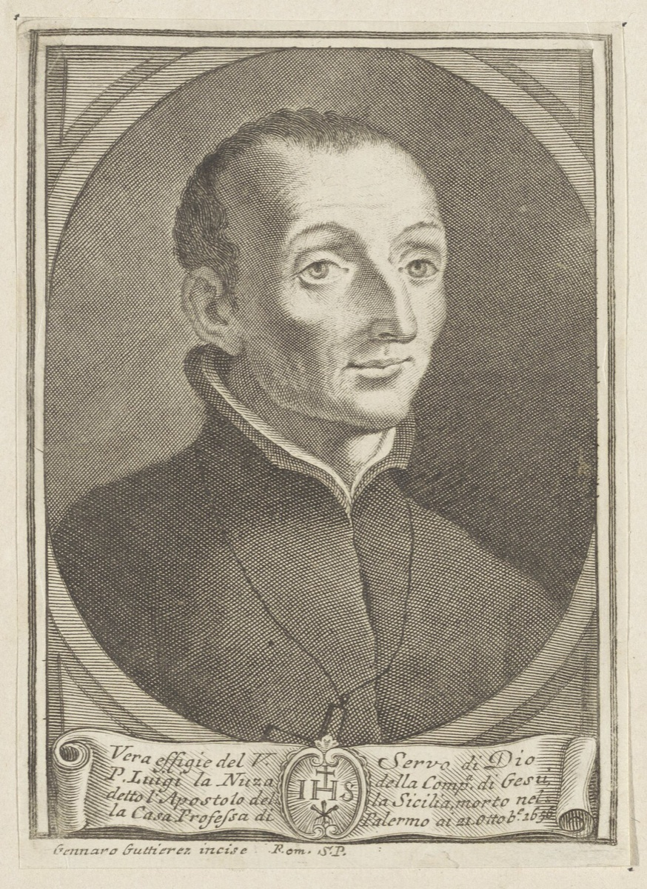

Časni sluge Božji
Svećenik
Časni sluga Božji Alojzije La Nuza
1591. – 1656.
Sicilski isusovac i pučki propovjednik koji je gotovo trideset godina obilazio gradove, sela i otoke Sicilije te dopirao do Malte. Zbog propovijedanja, ispovijedanja i brige za zatvorenike i siromahe prozvan je apostolom Sicilije.
Tekst je sažet i prilagođen uz pomoć umjetne inteligencije.

Izvor slike
- Spomendan
- 21. listopada
- Zaštitništvo
- Nije navedeno u izvoru
- Životni vijek
- 1591. – 1656.
- Djelovanje
- Misije i evangelizacija · Siromašni i isključeni · Obitelj i gubitak bližnjih
- Razdoblje
- 16., 17. stoljeće
- Crkveni naslov
- Časni sluga Božji
- Rođenje
- 1591., Licata, Sicilija
- Rođenje — dostupni podaci
- 1591.; dan i mjesec rođenja nisu provjereni.
- Država rođenja
- Italija (Sicilija)
- Datum smrti
- 21.10.1656.
- Mjesto smrti/mučeništva
- Palermo, Italija
- Uloga
- Svećenik
- Mučenik
- Ne
- Ostale oznake
- Časni sluga Božji – nema liturgijskog spomendana; u direktoriju naveden na dan smrti.
- Pripadnost
- Isusovac
- Drugi oblici imena
- Luigi La Nuza · Luigi
- Priznanje herojskih kreposti
- 25. ožujka 1847., Pio IX.
- Počivalište
- Crkva Gesù (Casa Professa), Palermo
U kalendaru zbirke naveden je dan smrti.
Životopis
Alojzije La Nuza rođen je 1591. u Licati, na južnoj obali Sicilije, kao sin španjolskoga časnika. Djetinjstvo je dijelom proveo u Španjolskoj, gdje je otac služio vojsku, a nakon povratka obitelji na Siciliju pohađao je isusovački kolegij u Palermu. Ondje je sazrela njegova želja za redovničkim životom, no poglavari su ga zbog slaba zdravlja nekoliko godina odbijali.
Kad mu je bilo osamnaest godina, 1609., primljen je u novicijat Družbe Isusove u Messini. Slijedile su godine studija humanističkih predmeta, filozofije i teologije, a između njih i sam je poučavao, među ostalim u Trapaniju i Palermu. Za svećenika je zaređen sredinom dvadesetih godina 17. stoljeća, a svečane zavjete položio je 1626. u palermskoj crkvi Gesù.
Glavnina njegova svećeničkoga rada bila je propovijedanje. Gotovo trideset godina obilazio je gradove, sela i otoke Sicilije, a s pučkim misijama stigao je i do Kalabrije i Malte. Propovijedao je na trgovima i ulicama, vodio adventske i korizmene cikluse propovijedi te dugo sjedio u ispovjedaonici. Posjećivao je bolesnike, zatvorenike i veslače na galijama, mirio zavađene obitelji i pomagao siromasima i siročadi. Puk ga je zato prozvao apostolom Sicilije.
U listopadu 1656., dok je vodio misiju u Cariniju nedaleko od Palerma, teško je obolio od upale pluća. Prenesen je u isusovačku kuću u Palermu, ali se više nije oporavio te je ondje umro 21. listopada 1656. Pred kućom se tada okupilo mnoštvo ljudi koji su se htjeli oprostiti od propovjednika kojega su mnogi poznavali iz vlastitih župa i sela.
Život i nasljeđe
Glas o svetosti njegova života nije se ugasio nakon smrti, pa je postupak za njegovo proglašenje blaženim uveden u Rimu 17. veljače 1713. Nakon dugoga ispitivanja svjedočanstava papa Pio IX. odobrio je 25. ožujka 1847. dekret o njegovim herojskim krepostima. Otada ga Crkva naziva časnim slugom Božjim, a postupak za beatifikaciju nije dovršen.
Pokopan je u palermskoj crkvi Gesù, poznatoj i kao Casa Professa, uz koju je bio vezan velik dio njegova redovničkoga života. Njegovi posmrtni ostaci više su puta službeno pregledani, posljednji put 1954. U sjećanju sicilske Crkve ostao je primjer svećenika koji je navještaj Evanđelja povezivao s konkretnom brigom za zatvorenike, bolesne i siromašne te s mirenjem zavađenih.
Tekst je sažet i prilagođen uz pomoć umjetne inteligencije.
Pročitaj više na izvornoj stranici ↗